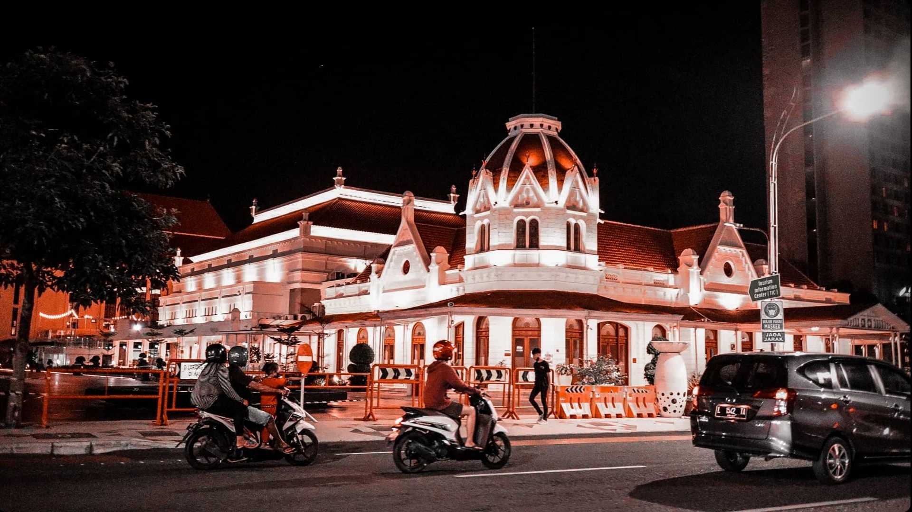

Gallery

Lawang Sewu
Lawang Sewu adalah gedung bersejarah milik PT Kereta Api Indonesia (Persero) yang awalnya digunakan sebagai Kantor Pusat perusahaan kereta api swasta Nederlandsch-Indische Spoorweg Maatschappij (NISM).

Monumen Soekarno Hatta
Patung Presiden dan Wakil Presiden Indonesia yang pertama yang sedang membaca naskah proklamasi ini berada di dalam kompleks Tugu Pahlawan Surabaya, tepat di seberang kantor Gubernur Jawa Timur

Balai Kota Surabaya
Balai Kota Surabaya didirikan pada tahun 1915-1925. Arsiteknya adalah GC.Citroen dan pelaksanaannya oleh H.V Hollandsche Beton Mij dengan menghabiskan dana sekitar 1000 gulden pada saat itu (sekitar 8 juta) untuk seluruh biayanya.